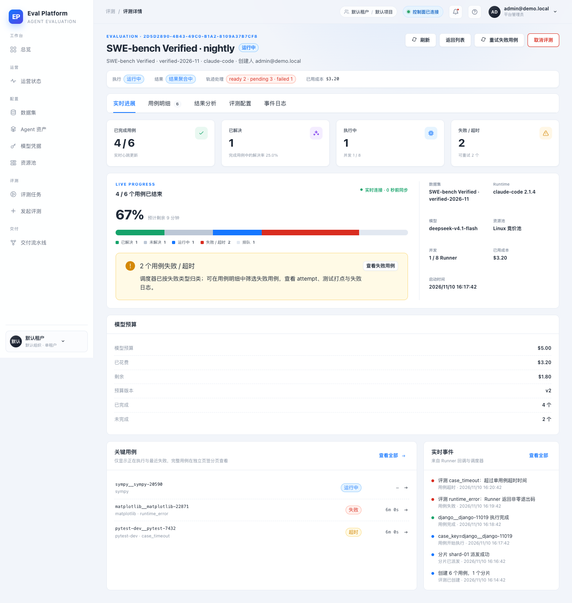
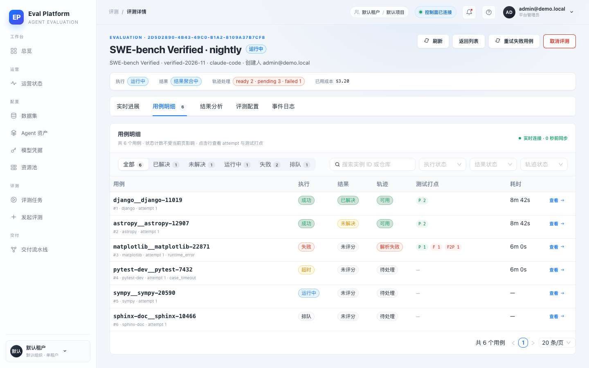
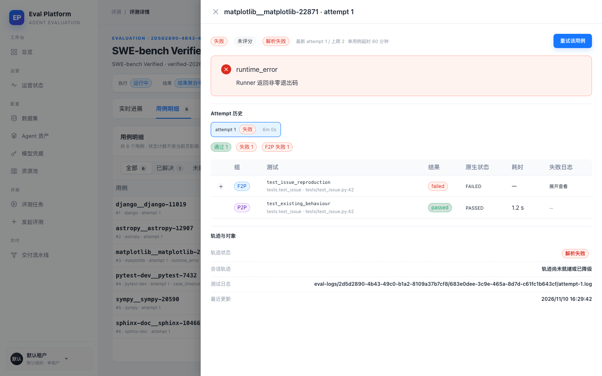
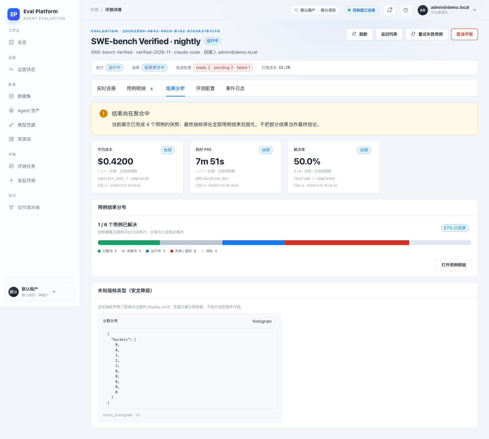
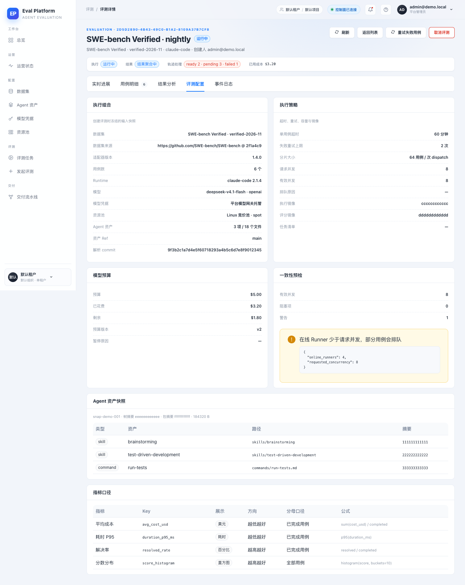
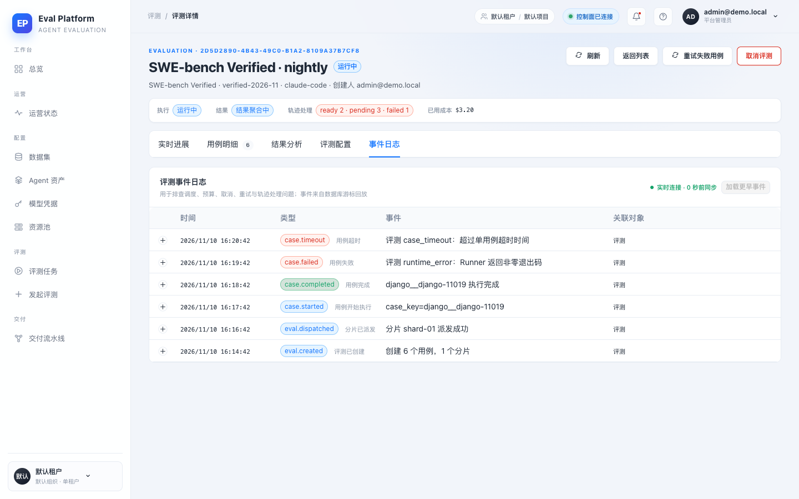
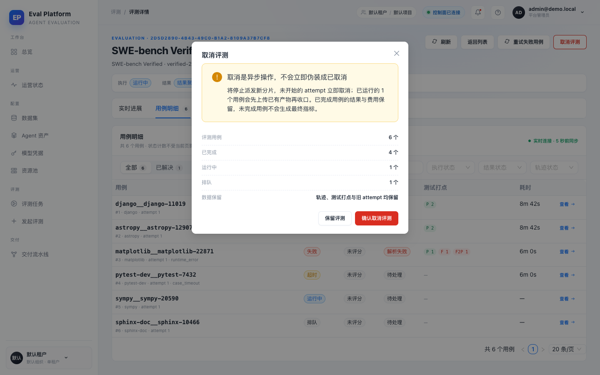
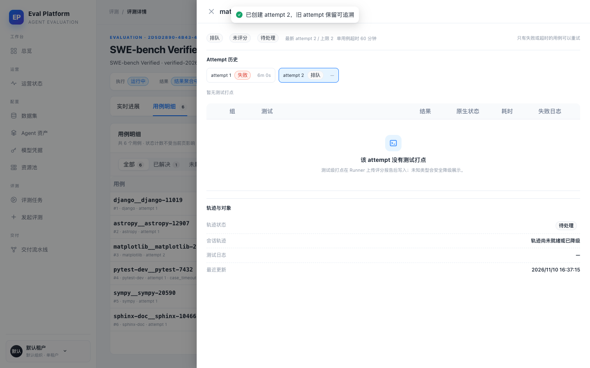
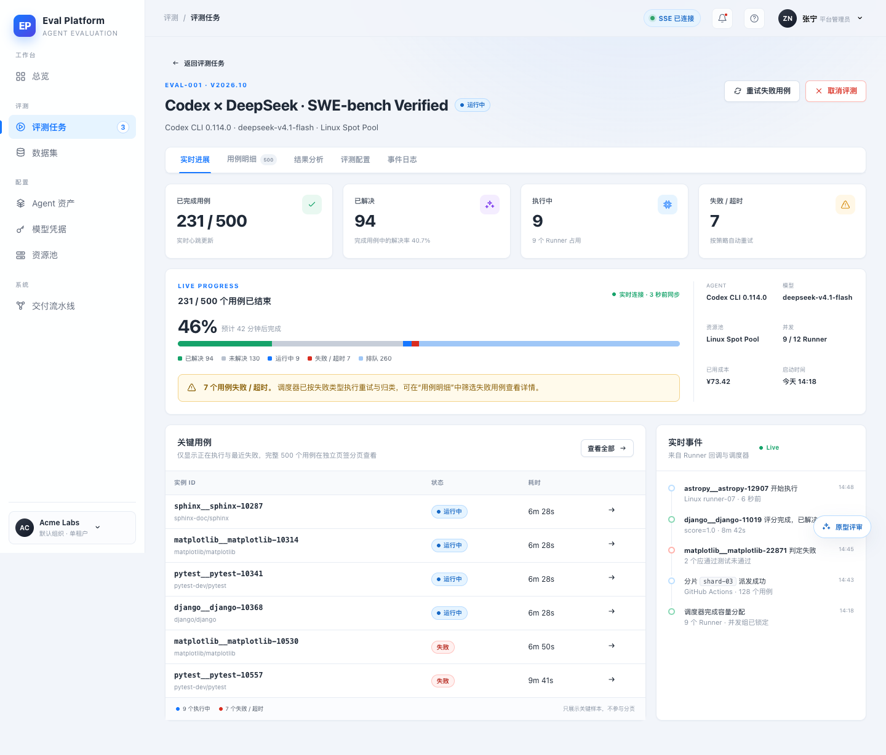
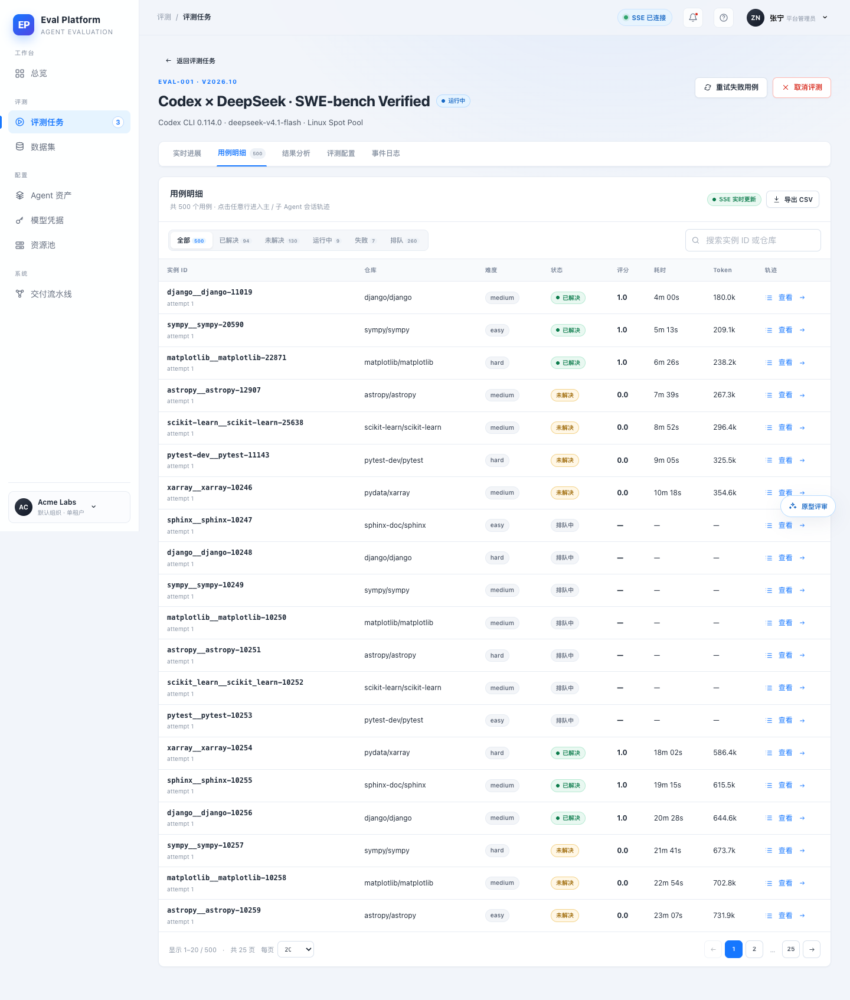

- 分支
- agent/complete-m5-05-2dad5fa1ffb9
- Commit
- PENDING
- 评测样本
- 6 用例 · 2 失败/超时 · 2 可重试 · $3.20 已花费
- 视口
- 1440×900 · 1280×800
- 原型对照
- prototype/index.html#/evals/eval-001
AI Eval Platform · Playwright smoke
M5-05 评测详情与结果工作台 · 冒烟报告
评测详情工作台的 12 个集成场景全部通过：概览状态分区、运行中刷新、SSE 断线重连、用例筛选/搜索与深链、测试打点、单用例重试与事件追溯、指标口径降级、配置快照以及 1280×800 桌面适配。最终冒烟未发现阻塞问题，也未出现控制台运行时错误。
12冒烟场景
0失败
PENDING后端 pytest
67 / 67Node 门禁
Environment and Artifact
2026-11-10 · Web 1440×900 / 1280×800 · Chrome headlessScenario Matrix
12 pass| # | 场景 | 结果 | 说明 | 证据 |
|---|---|---|---|---|
| 01 | 概览状态分区 | PASS | 执行/结果/轨迹状态条、4 张指标卡、堆叠进度、预算、关键用例与实时事件同时渲染。 | m5-05-after-overview.png |
| 02 | 运行中刷新不丢进展 | PASS | 刷新后仍显示 4 / 6 已完成、$3.20 已花费和五个标签页；快照重新拉取且不回退。 | m5-05-after-refresh.png |
| 03 | SSE 断线重连与游标回放 | PASS | 人为中断事件流后显示等待连接；恢复后重新显示实时连接，6 条快照事件无重复。 | m5-05-after-sse-disconnected.png m5-05-after-sse-reconnected.png |
| 04 | 用例筛选与搜索 URL 状态 | PASS | 失败 + matplotlib 搜索命中 1 行；状态计数保持全量，筛选进入 URL 可刷新恢复。 | m5-05-after-cases-filtered.png |
| 05 | 用例深链与测试打点 | PASS | case/attempt 深链恢复抽屉；F2P/P2P 测试行、失败信息与日志对象引用可见。 | m5-05-after-case-deeplink.png |
| 06 | 单用例重试创建新 attempt | PASS | 真实调用重试接口后出现 attempt 2，attempt 1 保留；旧的轨迹/测试证据不被覆盖。 | m5-05-after-retry-applied.png |
| 07 | 重试操作可在事件日志追溯 | PASS | 事件日志出现 case.retry_requested / 手动重试已排队，记录操作者与新 attempt。 | m5-05-after-retry-event.png |
| 08 | 指标口径与未知类型降级 | PASS | P95 显示为 7m 51s，解决率显示 3 / 6 与“已完成用例”分母；histogram 未注册时降级为原始值。 | m5-05-after-results-verified.png |
| 09 | 配置快照与指标定义 | PASS | 数据集/版本、模型、资源池、并发、超时、重试、镜像摘要、预算与指标口径全部可见且无密文。 | m5-05-after-config-verified.png |
| 10 | 取消与批量重试确认 | PASS | 取消展示范围/费用/数据保留；批量重试展示可重试用例与 attempt 上限，均未实际执行破坏性操作。 | m5-05-after-cancel-confirm.png m5-05-after-bulk-retry-confirm.png |
| 11 | 1280×800 桌面适配 | PASS | 主操作、筛选和表格在 1280×800 下不被遮挡，上下文区自动换行。 | m5-05-after-overview-1280.png m5-05-after-cases-1280.png |
| 12 | 改动前后与原型对照 | PASS | 旧版单页与新五分区工作台对比清晰；原型的分区、指标卡、堆叠进度、关键用例和事件区均被保留。 | m5-05-before-eval-detail.png prototype-eval-overview.png prototype-eval-cases.png |
Issues and Observations
No defects foundNo defects were found.
Evidence
10 screenshots









Automated Coverage Assessment
5 areas reviewed| 区域 | 覆盖 | 结论 | 建议 |
|---|---|---|---|
Conclusion
Ready for reviewM5-05 的五分区工作台、筛选/深链、重试、预算恢复、配置快照和事件日志均通过自动化 API 测试与浏览器冒烟；未发现阻塞问题。
- 单用例重试仅在运行中且 attempt 未耗尽时开放；终态重跑由发起评测流程承担。
- 原型的难度/评分/Token 列当前数据模型未提供，M5-05 以执行/结果/轨迹/测试打点列满足验收。
- 结果页基线对比属于 M5-06，未在本 PR 实现。
证据由 Playwright + 本机 Chrome 采集；演示数据不含真实凭据。截图未提交到代码仓，按需求放入 PR 描述。